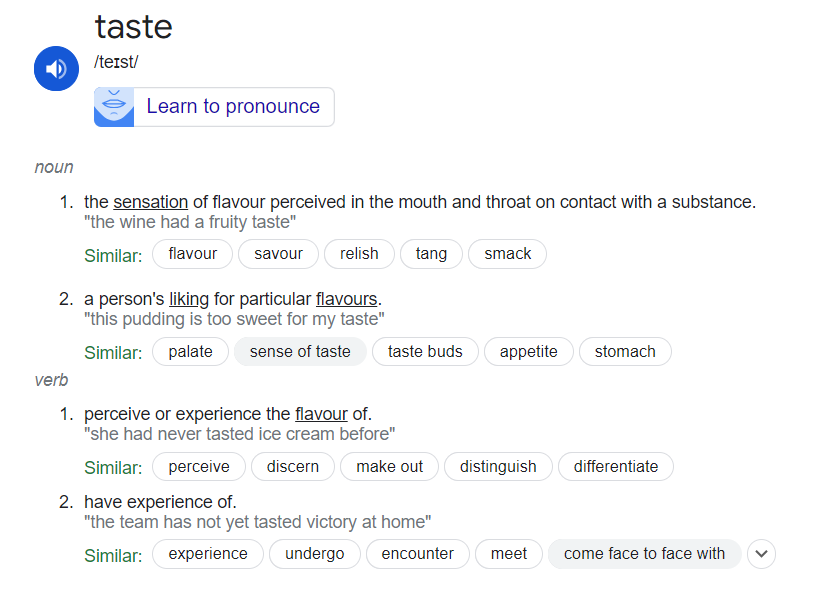

Why having a good taste is all you need to build great open-source projects
Kurian Benoy
Friday, June 14, 2024
$whoami

$whoami
- ML Engineer at Sarvam.ai
- Volunteer @ Swathanthra Malayalam Computing (SMC)
- Speaker in International conferences like FOSSASIA Summit, Pycon India, Tensorflow Usergroup India summit etc.
- Creator of indicsubtitler.in and Malayalam voice models like Vegam-whisper, MalWhisper etc.
- Maintains whisper_normalizer a python packages with 397,357+ downloads.
$whoami
- Kaggle expert in Notebooks and Discussions
- FOSS and Python enthusiast
- Writes frequently in linkedin(@kurianbenoy) and twitter(@kurianbenoy2)
- Proud Mallu.
- Knows a bit of ML, Python, Backend, Frontend, Linux, Debian.
Good Taste
What is a great open-source project?
- It’s just a project which you have done excellent job.
- Got some validation in the process of doing it.
- Why you should be blogging
- My favourite quote is: Journey is the Inn.
Attention is all you need

Women who inspired me
- Minu Thomas
- Dr. Anu Benoy (My mother)
- Sunu Abhilash
- My Grandmother (Ammachi)
- Dr. Kavya Manohar
- Sumathi Thirumani
Diving into open-source project
whisper_normalizer- https://pypi.org/project/whisper-normalizer/indicsubtitler.in- https://github.com/kurianbenoy/Indic-Subtitler
About whisper_normalizer
- How it was formed?
- Caring about Indian languages when called out
- Getting used by projects in big companies
- Enjoying the journey to 500K+
About indicsubtitler.in
- When it got build?
- Building it with a fantastic team of Aldrin Jenson and Nabeel Boda.
- Caring about minute details
- Doing charity by giving H100 GPUs to my users :)
Disclaimer
- I bought a lottery and became a millionare.
- Every inspirational speech should come with a disclaimer on Survivorship bias. Also I was lucky to have so many situations in favour for me.
My Coding Journey
- 2016 to 2019: Python, fantastic first teacher
- 2019 to 2020: Kaggle Expert, Pycon India first time Talk, FOSSASIA OpenNights Winner, Building TTS for Malayalam(failed)
- 2020 to 2022: Got a job in AOT Technologies, SMC first contribution
- 2022 to 2024: Got a job in AOT Technologies, Spoke in Pycon India thrice by then, FOSSASIA once more, started whisper_normalizer
- 2024: indicsubtitler building, whisper_normalizer became popular, Got a job at sarvam.ai as ML Engineer
My Coding Journey
My Coding Journey
My Coding Journey
My Coding Journey
My Coding Journey
My Coding Journey
My Coding Journey
My Coding Journey
My Coding Journey
My Coding Journey
My Coding Journey
My Coding Journey
My Coding Journey
Few strong principles everyone should have IMO
- Be opiniated, you can’t please everyone in world.
- Be a builder, work hard.
- Code can be humbling
- Starting trusting your decisions
- Remember your roots
- Start every day as your first day in acting, coding, learning something new …
Watch this video of Mamooty
Success can be humbling
AMA (Ask me anything)
- Thanks for giving me this opportunity to speak :)